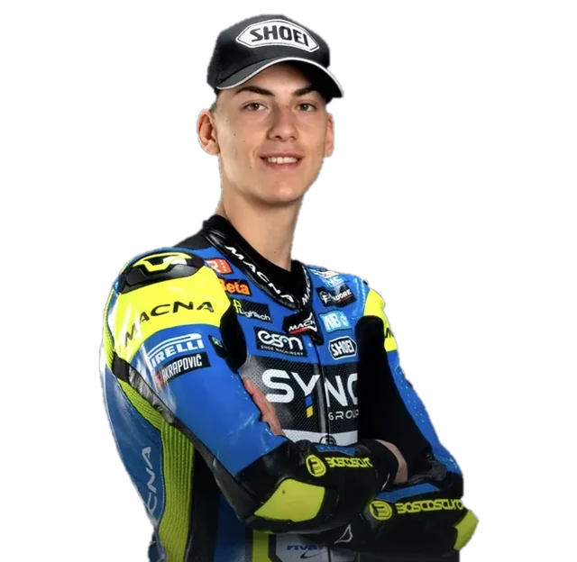
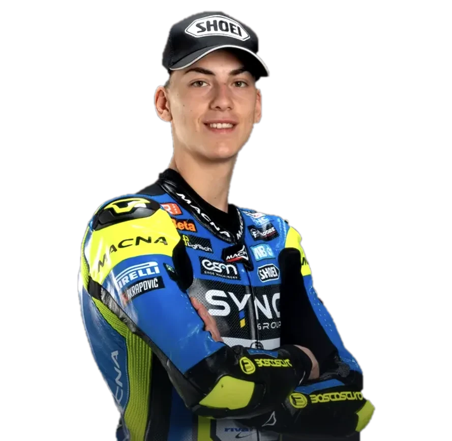
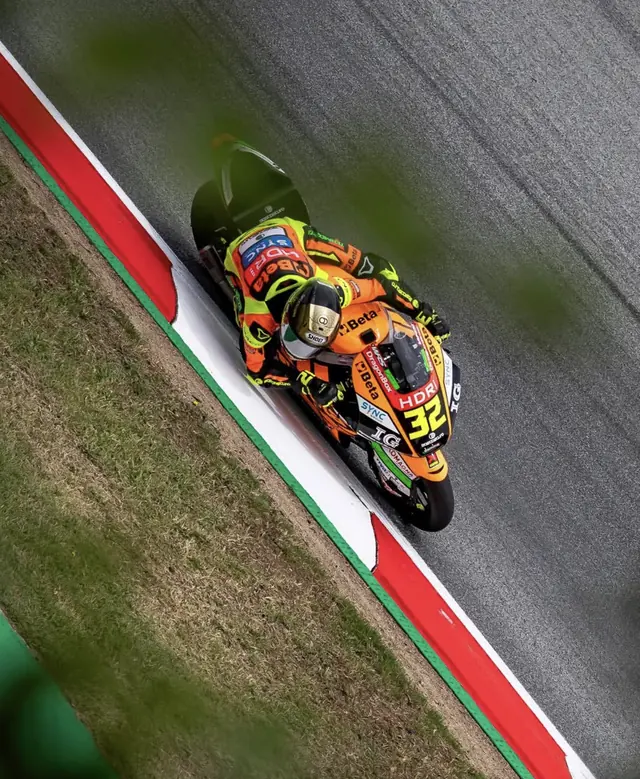
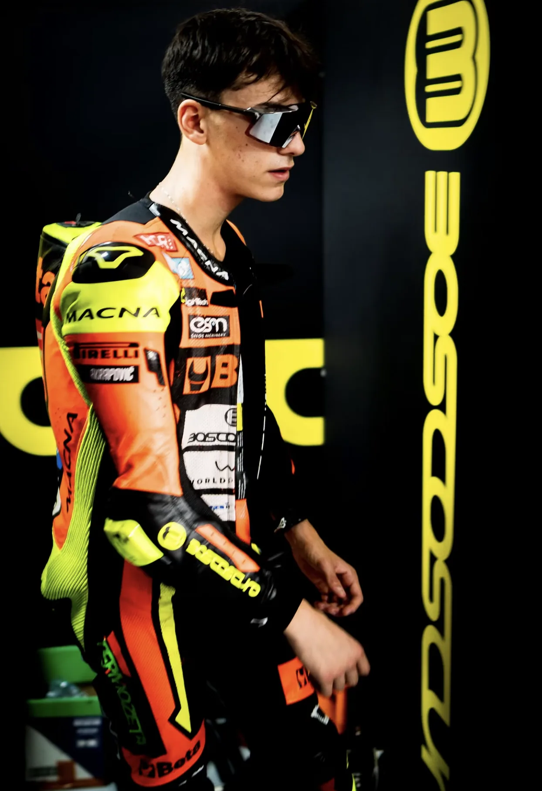
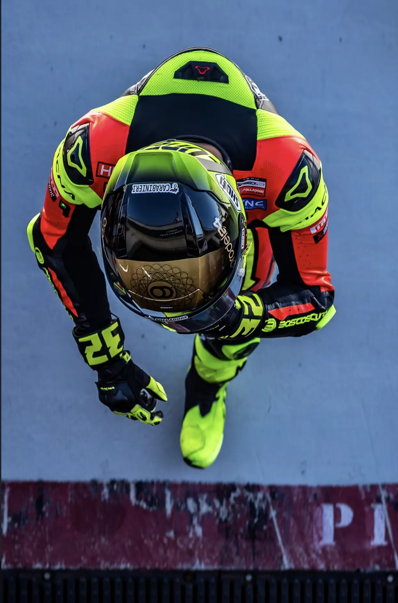
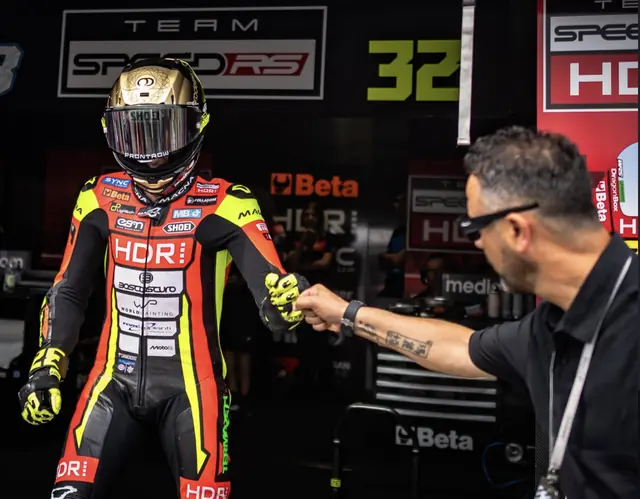
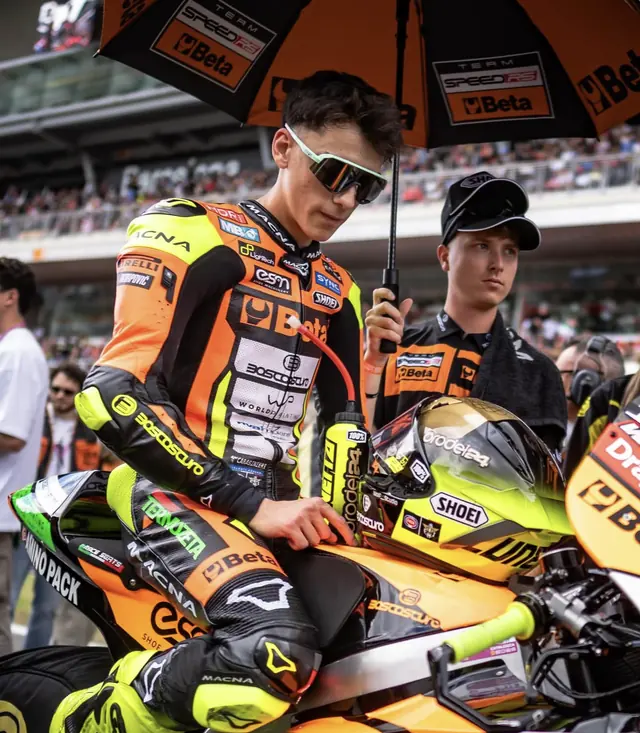

Prossima sessione
GP d'Australia
Phillip Island Grand Prix Circuit
00giorni
00ore
00minuti
00secondi
Prossima sessione: Prove libere 1


Il conto alla rovescia verso la prossima sessione di Luca e gli orari del weekend, in ora italiana.
Prossima sessione
Phillip Island Grand Prix Circuit
Prossima sessione: Prove libere 1
Luca parte spesso dalle retrovie e in gara risale: in media dal 20° al 16° posto. Una stagione da rookie in Moto2, partita con un infortunio e costruita giro dopo giro.
Rookie in Moto2, partito in salita. A Buriram, nel primo GP, un contatto con Sergio García gli è costato la frattura di un piede: operato il 4 marzo, ha saltato Brasile e Stati Uniti ed è rientrato a Jerez. Il primo risultato di peso è arrivato a Montmeló: partito 10°, arrivato 9°.
Ogni colonna è un Gran Premio. Il cerchio vuoto è la posizione di partenza, il pieno quella d'arrivo: se la linea sale, Luca ha recuperato.
| Gran Premio | Griglia | Arrivo | Punti |
|---|
Dopo il GP d'Indonesia.
Dal box alla pista, la stagione 2026. Trascina, scorri o usa le frecce.
22 Gran Premi, dalla Thailandia a Valencia. Il GP del Qatar, previsto ad aprile, si corre l'8 novembre; Portogallo e Valencia sono stati spostati di una settimana.
Dalla minimoto alla Moto2: la strada di Luca, anno per anno.

| Anno | Classe e team | GP | Podi | Punti | Finale |
|---|

Luca Lunetta nasce a Roma il 27 maggio 2006. Sale su una minimoto a cinque anni e non scende più: titoli italiani ed europei nel Pocketbike, poi le categorie giovanili con la Federazione Motociclistica Italiana, che lo inserisce tra i Talenti Azzurri.
Il 2019 è l'anno della svolta: vince il CIV PreMoto3 con 6 vittorie, 11 podi e 5 pole. Poi la Red Bull MotoGP Rookies Cup, il JuniorGP chiuso al secondo posto nel 2023 e il debutto nel Motomondiale ad Assen, a 16 anni.
Dal 2024 è in Moto3 con il Sic58 Squadra Corse: due podi nel primo anno, ad Aragón e in Thailandia, altri due nel 2025, a Silverstone e a Mandalika. Dal 2026 corre in Moto2 con il BETA Tools SpeedRS Team, su Boscoscuro, con un contratto di tre anni.
Il 58 è il numero che Luca usa in omaggio a Marco Simoncelli, il suo idolo d'infanzia. Lo ha portato in Moto3 con il Sic58 Squadra Corse, il team guidato da Paolo Simoncelli, papà di Marco. È rimasto anche nel nome del suo profilo: lucalunetta58.

Il 26 novembre 2024 Luca ha giurato alla Scuola Allievi Carabinieri di Torino ed è entrato nel Centro Sportivo dell'Arma: è il primo pilota motociclista a farlo. A Roma fa parte della Sezione Pentathlon Moderno e motociclismo.
«Una giornata indimenticabile.»
Luca, il giorno del giuramento
Le persone e le realtà che stanno dietro al numero 32.
La squadra guidata da Luca Boscoscuro, con base a Schio. Nel 2026 corre in Moto2 con Luca e Celestino Vietti su moto Boscoscuro.
Il compagno di box, numero 13. Ottavo nel Mondiale con 133 punti, pole e giro più veloce a Montmeló.

Il manager di Luca. Lavora per Front Row.
Dal 26 novembre 2024 Luca è atleta dell'Arma, nella Sezione Pentathlon Moderno e motociclismo. Il primo pilota motociclista a entrare nel Centro Sportivo.
Dal 2018 fa parte del progetto della Federazione Motociclistica Italiana dedicato ai giovani piloti.
Il team di Paolo Simoncelli con cui Luca ha corso in Moto3 nel 2024 e nel 2025: quattro podi in due stagioni.
Ogni weekend di gara, in diretta o in differita: ecco dove seguire le sessioni di Luca.
Moto2 in diretta sul canale 208, anche su NOW e Sky Go. Abbonamento Sky.
Vai al sitoIn chiaro, senza abbonamento: qualifiche in diretta e gara in differita, secondo palinsesto.
Vai al sitoIl pass ufficiale: ogni sessione in diretta e on demand, anche fuori dall'Italia. A pagamento.
Vai al sitoTempi, posizioni e settori in tempo reale dal sito ufficiale: cerca il numero 32.
Apri il live timingLe dirette sono dei rispettivi broadcaster: questo sito ti porta dritto lì. Gli orari possono cambiare, controlla sempre il programma ufficiale.

Orari, risultati e foto di ogni weekend di gara in un posto solo. Per le novità dal box segui Luca su Instagram.
Luca su Instagram: 38,2 mila follower (dato del 23 ottobre 2026).
Per collaborazioni, sponsor e richieste stampa il riferimento di Luca è il suo manager, Diego Tavano (Front Row). Il modo più rapido è un messaggio diretto sul profilo Instagram di Luca.
Scrivi al management